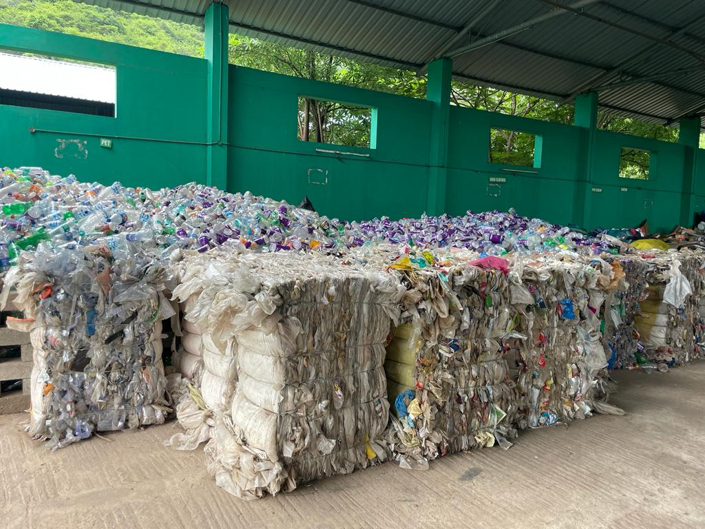

India Youth for Society (IYFS)is a civil society organization that promotes environmental awareness among the public to achieve a plastic-free India.
To reduce plastic pollution, awareness campaigns have been carried out to raise public awareness to reduce the consumption of single-use plastic products in their daily lives.
 India Youth for Society (IYFS) was established in 2011 with a vision to bring about positive change in society. In 2014, the “Preventive Polyethylene – Save the Planet (P4)” campaign was launched to address the growing problem of plastic waste. When was the last time we thought about the consequences of our actions?
Maybe after we face them.
India Youth for Society (IYFS) was established in 2011 with a vision to bring about positive change in society. In 2014, the “Preventive Polyethylene – Save the Planet (P4)” campaign was launched to address the growing problem of plastic waste. When was the last time we thought about the consequences of our actions?
Maybe after we face them.
• Awareness about the policy: In addition to creating awareness about the hazards of plastic waste, the campaign aims to educate the public about the existing policies, rules, regulations, and penalties related to plastic usage in India. By providing clear information about the legal framework surrounding plastics, the campaign encourages individuals to comply with the regulations and understand their responsibilities in managing plastic waste.

• Promotion of best practices: The campaign intends to promote and showcase best practices for reducing plastic consumption and waste generation. This includes advocating for the use of eco-friendly alternatives to disposable plastics. Through various activities, such as workshops, seminars, and awareness drives, the campaign encourages citizens and enforcement agencies to adopt sustainable practices like carrying reusable cloth bags, using paper bags, opting for wooden toothbrushes, pens, and toys, and choosing steel items over plastic ones.
• Highlighting available alternatives: The campaign focuses on highlighting and popularizing alternatives to disposable plastics. By emphasizing the use of eco-friendly alternatives, such as cloth bags, paper bags, wooden products, and steel items, it aims to encourage individuals and businesses to shift away from single-use plastics. The campaign may involve collaborations with local businesses, manufacturers, and retailers to ensure the availability and accessibility of these alternatives.
• Action-oriented approach: The campaign recognizes the importance of taking action to address the issue of plastic waste. It emphasizes the collection and proper handling of plastic waste, promoting effective recycling processes, and supporting the production of new plastic items using recycled materials. The campaign also aims to promote the adoption of the best available technologies for waste management and plastic recycling, ensuring that sustainable practices are implemented across the entire lifecycle of plastic products.
By pursuing these objectives, the 'Plastic Free India' awareness campaign by IYFS aims to create a significant impact by raising awareness, promoting sustainable alternatives, and encouraging responsible plastic waste management practices throughout the country.